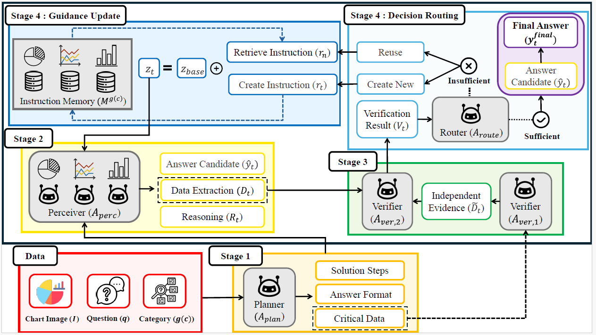
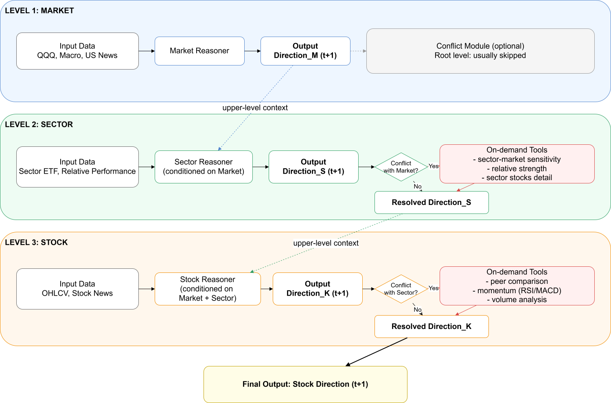
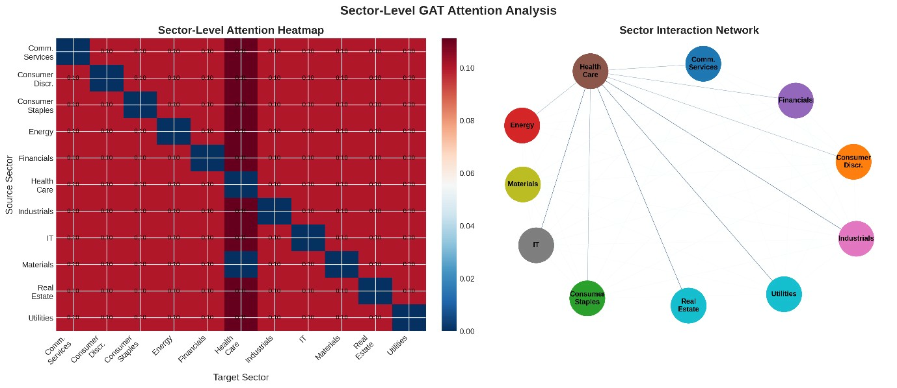
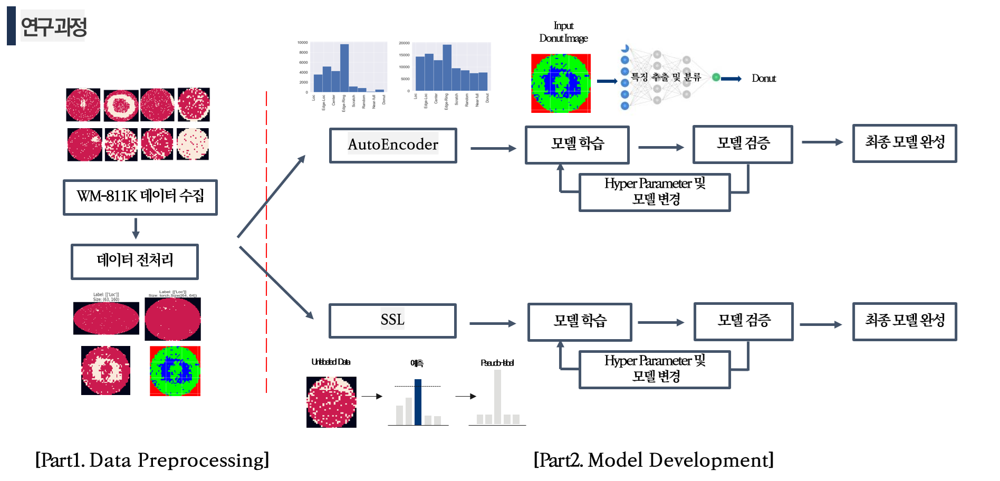

01
도메인 확장형 문제 해결력
제조 공정의 불량 탐지부터 글로벌 금융 시장의 포트폴리오 최적화까지, 다양한 형태의 데이터를 다루며 특정 도메인에 얽매이지 않는 유연한 문제 해결 능력을 갖추었습니다.
문제 해결 중심 AI 엔지니어
단순히 최신 모델을 맹종하거나 정확도 향상에만 집착하지 않습니다. 문제의 본질과 합리적인 근거를 바탕으로, 실제 비즈니스 환경에 적합한 AI 기술을 선택해 복잡한 문제를 해결합니다.
제조 공정의 불량 탐지부터 글로벌 금융 시장의 포트폴리오 최적화까지, 다양한 형태의 데이터를 다루며 특정 도메인에 얽매이지 않는 유연한 문제 해결 능력을 갖추었습니다.
단일 딥러닝 모델의 한계를 넘기 위해, 연쇄 추론(CoT)과 다중 에이전트 시스템을 적용합니다. 언어 모델의 추론 능력을 극대화하고 스스로 충돌을 조정하는 고도화된 AI 파이프라인을 구축합니다.
프로필
서강대학교 경제학석사 AI금융전공 졸업예정
인하대학교 산업공학과 졸업
다중 에이전트 시스템, CoT
핵심 역량
SQLD, ADsP, AI-900
TESAT, 투자자산운용사, 자산가격결정론 수강
통계적 공정관리, 신뢰성공학 수강
OPIC - IH, TOEIC - 920, TOEFL - 102
인하대학교 태권도부 7년 활동 및 회장 역임
주요 경험
인하대학교
반도체 제조 공정의 품질 향상을 위한 컴퓨터 비전 AI 적용 연구 수행 '딥러닝을 이용한 반도체 웨이퍼 결함 검출 자동화' 학회 투고
LG AI Research
머신러닝, 딥러닝 및 통계학 기반의 실무 데이터 분석 교육 수료 시계열 데이터 분석을 적용하여 온라인 제품 판매량 예측 알고리즘 개발
SK Telecom
데이터 기반 모델링 및 클라우드 배포 중심의 AI 실무 교육 수료 여러 AI 모델로 사투리를 자연스럽게 변환하는 파이프라인 구축
Carnegie Mellon University
CMU 정규 과정(IDL, NLP) 이수 및 기업 프로젝트 수행 현지 교수와 다중 에이전트 시스템 기반의 연구 공동 진행
PROJECT 1
Carnegie Mellon University
Planning, Perception, Iterative Verification을 포함하는 자가 개선형 Multi-Agent Chart Question Answering 파이프라인 구축

차트 기반 VQA는 여전히 단일 범용 프롬프트에 의존하는 경우가 많아, 차트 유형별 해석 규칙을 구조적으로 반영하지 못하는 한계가 있습니다.
그 결과 축·범례·단위가 얽힌 복합 시각 정보에서 값 추출 오류가 반복되고, 답변 근거의 일관성도 떨어집니다.
또한 VLM 파인튜닝은 비용과 시간이 커서, 빠른 개선이 필요한 환경에서 현실적인 대응이 어렵습니다.
본 연구는 차트 QA를 Planning→Perception→Verification의 Self-Refining 멀티에이전트 파이프라인으로 재구성해, 차트 유형별 해석 규칙과 추론 순서를 먼저 고정했습니다.
Planning에서 정의한 Solution Steps·Critical Data·Answer Format을 기준으로, Perception 단계는 값만 근거로 구조화해 추출해 시각 정보(축·범례·단위)에서도 일관성을 높였습니다.
마지막으로 Verifier가 teacher 추출과 현재 답안을 비교해 실패 케이스에만 보정 루프를 수행하고 오류 패턴을 Protoform 메모리로 누적 재사용함으로써, 파인튜닝 없이도 반복 오류를 줄이며 정확도를 빠르게 개선했습니다.
PROJECT 2
서강대학교
시장, 섹터, 개별 주식 시그널을 통합하는 계층형 LLM Agent 트레이딩 파이프라인 구축 (Conflict-driven reasoning 적용)

금융 분야의 AI 예측은 여전히 단일 프롬프트에 다양한 데이터를 병렬로 투입하는 방식이 많아, 데이터의 우선순위와 사용 순서가 구조적으로 반영되지 않는 한계가 있습니다.
그 결과 시장·섹터·종목 간 맥락 연결이 약해지고, 예측 근거의 일관성과 해석 가능성이 떨어집니다.
즉, 인간 트레이더의 분석 흐름(거시→업종→종목)과 달리, 기존 접근은 단계적 정보 선별과 맥락 고정 기반 추론이 부족합니다.
본 연구는 금융 예측을 단일 프롬프트가 아닌 계층형 연쇄 추론 아키텍처(Market → Sector → Stock)로 재설계해 시장·섹터·종목 입력을 단계별로 분리하고, 상위 단계 맥락을 하위 판단의 필수 조건으로 연결해 데이터 우선순위와 추론 순서를 고정했습니다.
또한 상하위 판단이 충돌할 때만 상관·상대강도·피어비교·모멘텀·거래량 도구를 호출하는 Conflict-based Tool Augmentation을 적용해, 불확실 구간에 계산을 집중시키면서 Agent Reasoning의 일관성과 해석 가능성을 함께 높였습니다.
PROJECT 3
서강대학교
S&P 100 동적 섹터 상호작용을 반영한 Graph Attention Networks(GAT) 기반의 수익률 예측 모델 개발

전통적인 주식 예측 모델은 개별 종목의 시계열에만 의존해, 섹터 간·종목 간 구조적 상호작용을 명시적으로 반영하지 못합니다.
그 결과 시장 내 주도 섹터의 영향이 하위 종목 예측에 전달되지 않고, 관계 정보 없이 독립적으로 추론된 예측은 일관성과 해석 가능성이 낮습니다.
이를 해결하기 위해서는 시계열 정보와 구조적 관계 정보를 동시에 활용하는 모델 설계가 필요합니다.
본 연구는 예측을 GRU 기반 시계열 인코딩 → Stock-level GAT → Sector-level GAT의 계층적 그래프 추론 파이프라인으로 재구성해, 종목·섹터 수준의 정보 흐름을 분리하고 통합했습니다.
Transfer Entropy 기반 방향성 그래프를 구성해 섹터 간 인과적 상호작용을 구조화하고, attention 메커니즘을 통해 주도 섹터의 영향을 하위 종목 예측에 전달하는 모듈을 설계했습니다.
실험을 통해 attention flatness, class bias 등 구조적 한계를 분석하고, 슬라이딩 윈도우 기반 시계열-그래프 융합 접근의 효과와 한계를 비판적으로 검토해 향후 개선 방향을 도출했습니다.
PROJECT 4
인하대학교
클래스 불균형과 레이블 부족을 동시에 다루는 반도체 웨이퍼 결함 분류 파이프라인(CAE + FixMatch + DARP) 구축

반도체 웨이퍼 결함 분류는 수율 향상의 핵심 과제임에도, 실제 현장 데이터는 정상·불량 간 극심한 클래스 불균형과 절대적인 레이블 부족이라는 이중 제약을 동시에 가집니다.
기존 지도학습 모델은 소수 레이블 데이터에만 의존해 불균형 클래스에서 학습이 편향되고, 방대한 Unlabeled 데이터는 활용되지 못한 채 버려집니다.
결과적으로 제한된 데이터 환경에서 신뢰할 수 있는 분류 성능을 확보하기 어렵습니다.
Labeled 데이터 경로에서는 Convolutional AutoEncoder로 소수 클래스 패턴을 학습·생성해 클래스 불균형을 해소합니다
Unlabeled 데이터 경로에서는 FixMatch의 Weak/Strong Augmentation 기반 Consistency Training으로 레이블링 안된 데이터를 학습에 편입했습니다.
여기에 DARP를 추가 적용해 편향된 Pseudo-label이 모델 학습을 오염시키는 FixMatch의 구조적 한계를 보정함으로써, 제한된 데이터 환경에서도 안정적인 분류 성능을 확보했습니다.
OUTRO & CONTACT
현재 다중 에이전트 시스템(MAS)의 의사결정 고도화 연구에 집중하며 ICML MAS 워크샵 논문 제출 및 8월 KDD 학회 졸업 논문을 준비하고 있습니다.
KSQM 2023 대학원/학부생 경진대회 대상 수상